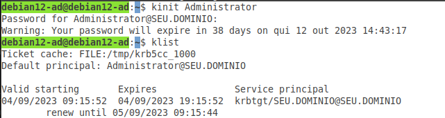

Editar o arquivo krb5.conf
Esta alteração é necessária para que o sistema mostre a validação do tickets.
O que será alterado e adicionado?
A primeira alteração será na linha: dns_lookup_realm = false deve ser alterado para:
dns_lookup_realm = true
Adicione estas duas linhas ao seu arquivo, que são obrigatórias para obter os tickets:
forward = true
forwardable = true
A próxima alteração é na linha realms. Adicione desta forma, alterando os dados para seu cenário:
[realms]
SEU.DOMINIO = {
# Adicione estas linhas abaixo alterando os nomes para seu cenário
admin_server = DEBIAN12-AD.SEU.DOMINIO
kdc = DEBIAN12-AD.SEU.DOMINIO
}
E também a linha domain_realm, alterando como mostra abaixo, e altere os dados para seu cenário:
[domain_realm]
# E estas duas últimas altere também para atender seu cenário
debian12-ad = SEU.DOMINIO
.seu.dominio = SEU.DOMÍNIO
Obeserve então, como ficará o arquivo krb5.conf
Editar o arquivo com o comando:
nano /etc/krb5.conf
[libdefaults]
default_realm = SEU.DOMINIO
# troque esta linha abaixo (dns_lookup_realm) para true
dns_lookup_realm = true
dns_lookup_kdc = true
# Estas duas linhas abaixo são obrigatórias para obter os Tickets do KDC
forward = true
forwardable = true
[realms]
SEU.DOMINIO = {
# Adicione estas linhas abaixo alterando os nomes para seu cenário
admin_server = DEBIAN12-AD.SEU.DOMINIO
kdc = DEBIAN12-AD.SEU.DOMINIO
}
[domain_realm]
# E estas duas últimas altere também para atender seu cenário
debian12-ad = SEU.DOMINIO
.seu.dominio = SEU.DOMÍNIO
Salve o arquivo:
Para salvar: control+o e para sair: control+x
Verifique a figura abaixo. Foi executado sem erros:kinit Administrator e logo após: klist:
